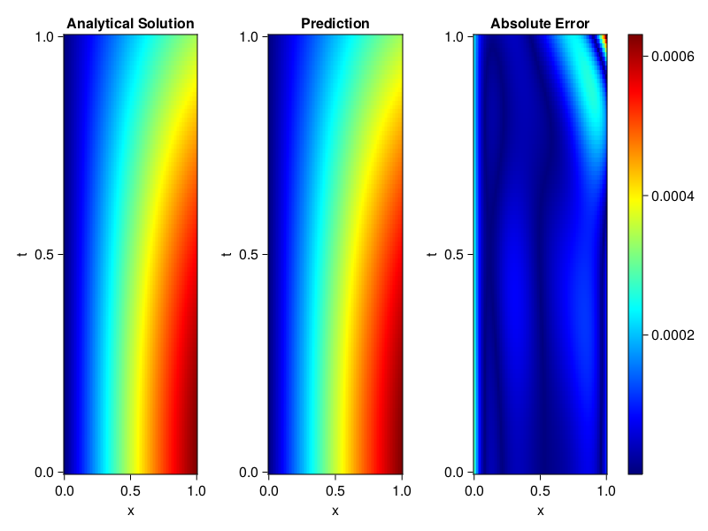
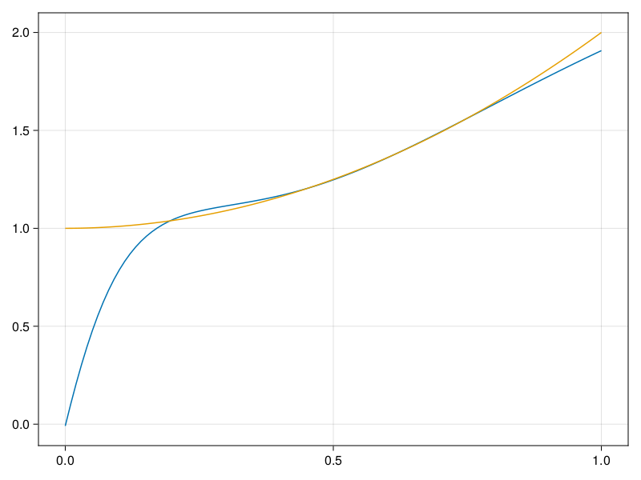

Inverse problem for the wave equation with unknown velocity field
We are going to sovle the wave equation.
using Sophon, ModelingToolkit, IntervalSets
using Optimization, OptimizationOptimJL
@parameters x, t
@variables u(..), c(..)
Dₜ = Differential(t)
Dₜ² = Differential(t)^2
Dₓ² = Differential(x)^2
s(x,t) = abs2(x) * sin(x) * cos(t)
eq = Dₜ²(u(x,t)) ~ c(x) * Dₓ²(u(x,t)) + s(x,t)
bcs = [u(x, 0) ~ sin(x),
Dₜ(u(x, 0)) ~ 0,
u(0, t) ~ 0,
u(1, t) ~ sin(1) * cos(t)]
domains = [t ∈ Interval(0.0, 1.0),
x ∈ Interval(0.0, 1.0)]
@named wave = PDESystem(eq, bcs, domains, [t,x], [u(x,t),c(x)])\[ \begin{align} \frac{\mathrm{d}^{2}}{\mathrm{d}t^{2}} u\left( x, t \right) =& c\left( x \right) \frac{\mathrm{d}^{2}}{\mathrm{d}x^{2}} u\left( x, t \right) + \cos\left( t \right) \left|x\right|^{2} \sin\left( x \right) \end{align} \]
Here the velocity field $c(x)$ is unknown, we will approximate it with a neural network.
pinn = PINN(u = FullyConnected((2,16,16,16,1), sin),
c = FullyConnected((1,16,16,1), tanh))
sampler = QuasiRandomSampler(500,100)
strategy = NonAdaptiveTraining(1, (10,10,1,1))NonAdaptiveTraining{Int64, NTuple{4, Int64}}(1, (10, 10, 1, 1))Next we generate some data of $u(x,t)$. Here we place two sensors at $x=0.1$ and $x=0.5$.
ū(x,t) = sin(x) * cos(t)
x_data = hcat(fill(0.1, 1, 50), fill(0.5, 1, 50))
t_data = repeat(range(0.0, 1.0, length = 50),2)'
input_data = [x_data; t_data]
u_data = ū.(x_data, t_data)1×100 Matrix{Float64}:
0.0998334 0.0998126 0.0997503 0.0996464 … 0.275281 0.267213 0.259035Finally we construct the inverse problem and solve it.
additional_loss(phi, θ) = sum(abs2, phi.u(input_data, θ.u) .- u_data)
prob = Sophon.discretize(wave, pinn, sampler, strategy; additional_loss=additional_loss)
@time res = Optimization.solve(prob, BFGS(), maxiters=1000)u: ComponentVector{Float64}(u = (layer_1 = (weight = [0.33536023994329994 0.5427727865993672; 0.4166015024205676 -0.6517718648115682; … ; 0.26220785096117116 -0.9123001044351183; -0.7719887635690494 -1.325666917816454], bias = [-0.21103389617706544; -0.23396681350961165; … ; -0.09390200938927451; -0.04399703241808696;;]), layer_2 = (weight = [-0.2851907488411019 -0.39033028903069894 … 0.06614843894315144 0.035898824423422945; 0.5283909235717745 -0.005299297576729875 … 0.3785508151929132 -0.4827279717371483; … ; -0.5481632686496491 -0.23127224121549744 … -0.25252009977380047 -0.2777371565182579; -0.3935370299806854 -0.34259635454972004 … 0.02339564910042657 -0.44603292969232045], bias = [-0.05922833674480863; 0.05253175030898561; … ; -0.11368310383986882; 0.19586544632711417;;]), layer_3 = (weight = [-0.4583642377942389 -0.06230292463048432 … -0.31606457040513275 0.10838545968934689; -0.4485007926914739 0.07717581729010081 … 0.44584125117575 0.662106073244289; … ; -0.22300955848156895 -0.07628616029949836 … 0.16523048123369558 0.5494060236420212; -0.19794145785006817 -0.7360717758074838 … 0.3762255298289752 -0.2210610217631531], bias = [0.03231606952238227; 0.08001629551144053; … ; -0.04058557718962908; -0.12216264292820296;;]), layer_4 = (weight = [-0.07105280532948906 -0.2670832017865065 … 0.0625524021446502 -0.11175241754214875], bias = [-0.15767560901112043;;])), c = (layer_1 = (weight = [-0.7807730140508032; -2.563672067903041; … ; -0.43881914628540214; 1.2863158299199908;;], bias = [0.07225181567548632; -0.27600257747524914; … ; 0.0491023413629014; -0.16216831467485318;;]), layer_2 = (weight = [-0.6856507095613 -0.4409918513535687 … 0.06239349631947798 0.5321482156471132; -0.2463934393580947 0.04570807927757092 … -0.603093048917301 0.3875432282102631; … ; 0.458224568676497 -0.2769113394386463 … 0.1691760850718516 -0.46455892376583285; 0.12348585939173194 0.30306731745752036 … 0.4391885708962901 -0.11816147078034554], bias = [0.0046867546233908715; -0.2488810936592813; … ; 0.11674943843952225; -0.07493424997351583;;]), layer_3 = (weight = [0.2601841762874409 0.9609389267771445 … 0.3539688811660204 0.017089450468402306], bias = [-0.2369690933473584;;])))Let's visualize the predictted solution and inferred velocity
using CairoMakie
ts = range(0, 1; length=100)
xs = range(0, 1; length=100)
u_pred = [pinn.phi.u([x, t], res.u.u)[1] for x in xs, t in ts]
c_pred = [pinn.phi.c([x], res.u.c)[1] for x in xs]
u_true = [ū(x, t) for x in xs, t in ts]
c_true = 1 .+ abs2.(xs) |> vec
axis = (xlabel="x", ylabel="t", title="Analytical Solution")
fig, ax1, hm1 = heatmap(xs, ts, u_true, axis=axis; colormap=:jet)
ax2, hm2= heatmap(fig[1, end+1], xs, ts, u_pred, axis= merge(axis, (;title = "Prediction")); colormap=:jet)
ax3, hm3 = heatmap(fig[1, end+1], xs, ts, abs.(u_true .- u_pred), axis= merge(axis, (;title = "Absolute Error")); colormap=:jet)
Colorbar(fig[:, end+1], hm3)
fig
fig, ax = lines(xs, c_pred)
lines!(ax, xs, c_true)
fig